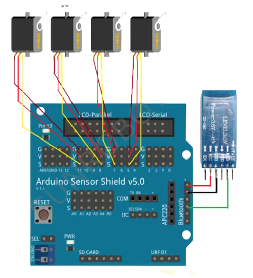

Voice-Controlled Robotic Arm
A hands-free robotic arm driven entirely by speech, built with accessibility for visually impaired users as the starting motivation.
Motivation
The project started from a question about accessibility. Visually impaired students, particularly in low-income regions, face real barriers to education. Braille, invented by Louis Braille in 1824, was the breakthrough that made reading accessible through touch, but traditional Braille materials wear out, are expensive to produce, and depend on a small number of publishers. That's the gap the broader project set out to explore: how to make interacting with physical, tactile systems less dependent on manual production.
What I built
The system I actually built and tested was a voice-controlled robotic arm. Audio comes in through a microphone connected to a Raspberry Pi, gets processed with a speech recognition library (Google's Web Speech API), and converted into text. That text is parsed for specific commands like moving in a direction or picking up an object.
Once a command is identified, the Raspberry Pi sends signals to the arm's motors and servos to execute the movement. Sensors on the arm confirm its position, and an LCD display or speaker gives the user feedback that the action was carried out successfully.


Result
The arm responds to simple spoken commands like moving left, moving right, or picking up an object, with a feedback loop confirming each action. It's a working example of hands-free control that could extend into accessibility tools, status displays, or cloud-based command storage in future iterations.